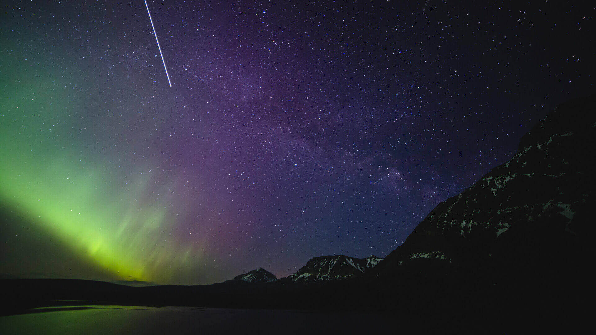

http://www.runoob.com/cssref/css3-pr-filter.html
sepia()，它会给图片增加一种降饱和度的橙黄色染色效果,几乎所有像素的色相值会被收敛到35~40
saturate() 滤镜来给每个像素提升饱和度
两个滤镜的组合会让我们的图片具有一种暖金色的染色效果。
hue-rotate() 滤镜，把每 个像素的色相以指定的度数进行偏移。
hue-rotate(295deg)
把原有的色相值 40 改变为 335， 我们需要增加大约 295 度（335 – 40）
saturate(%):转换图像饱和度。值定义转换的比例。值为0%则是完全不饱和，值为100%则图像无变化。其他值，则是效果的线性乘子。超过100%的值是允许的，则有更高的饱和度。 若值未设置，值默认是1。
sepia(%):将图像转换为深褐色。值定义转换的比例。值为100%则完全是深褐色的，值为0%图像无变化。值在0%到100%之间，则是效果的线性乘子。若未设置，值默认是0；